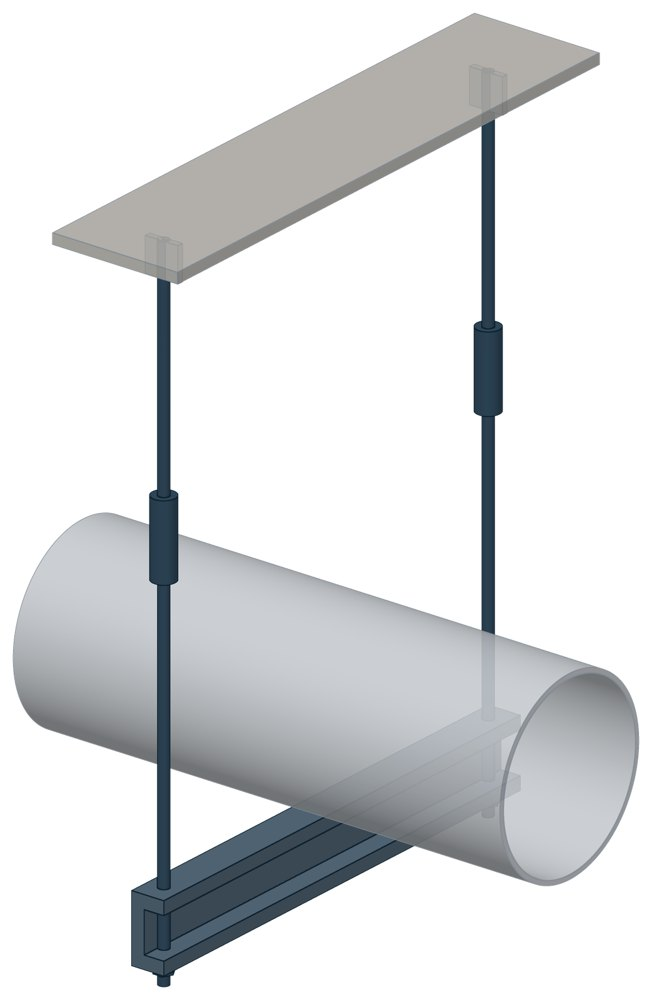

Подвесные опоры, подвески ПМ2ш, ПГ2ш ПГ2ш, ПМ2ш
ГОСТ 16127-70. Dн 108–530 мм, нагрузка Р max — до 78,45 кН, масса 8–76,2 кг.

- Диаметр трубы Dн
- 108–530 мм
- Документ
- ГОСТ 16127-70
- Исполнений
- 34
- Нагрузка Р max
- до 8000 кгс
- Масса
- 8–76,2 кг
- 3D-модели
- у всех исполнений (условные: общий вид по габаритам)
Таблица исполнений ПГ2ш, ПМ2ш
| Обозначение | Код ПРОМБУРГ | Dнмм | Нагрузка Р maxкгс | Высота Нмм | А maxмм | амм | dмм | lмм | l1мм | l2мм | Массакг | 3D |
|---|---|---|---|---|---|---|---|---|---|---|---|---|
| ПГ2Ш-108 | ПБ-ПГ2Ш-0108-1 | 108-114 | 750 | 530 | 450 | 34 | 12. | 76 | 336 | — | 8 | 3D |
| ПМ2Ш-108 | ПБ-ПМ2Ш-0108-1 | 108-114 | 750 | 600 | 450 | 34 | 12 | 465 | 52 | 24 | 8,9 | 3D |
| ПГ2Ш-133 | ПБ-ПГ2Ш-0133-1 | 133 | 900 | 550 | 500 | 48 | 16 | 93 | 344 | — | 10,7 | 3D |
| ПМ2Ш-133 | ПБ-ПМ2Ш-0133-1 | 133 | 900 | 620 | 500 | 48 | 16 | 550 | 70 | 30 | 13,5 | 3D |
| ПГ2Ш-159 | ПБ-ПГ2Ш-0159-1 | 159 | 1300 | 550 | 550 | 48 | 16 | 93 | 344 | — | 12,8 | 3D |
| ПМ2Ш-159 | ПБ-ПМ2Ш-0159-1 | 159 | 1300 | 670 | 550 | 48 | 16 | 550 | 70 | 30 | 15,6 | 3D |
| ПГ2Ш-194 | ПБ-ПГ2Ш-0194-1 | 194 | 1800 | 550 | 600 | 43 | 16 | 95 | 344 | — | 16 | 3D |
| ПМ2Ш-194 | ПБ-ПМ2Ш-0194-1 | 194 | 1800 | 670 | 600 | 43 | 16 | 550 | 70 | 30 | 18,8 | 3D |
| ПГ2Ш-219 | ПБ-ПГ2Ш-0219-1 | 219 | 2400 | 550 | 650 | 43 | 16 | 97 | 344 | — | 19,9 | 3D |
| ПМ2Ш-219 | ПБ-ПМ2Ш-0219-1 | 219 | 2400 | 720 | 650 | 43 | 16 | 550 | 70 | 30 | 22,8 | 3D |
| ПГ2Ш-273 | ПБ-ПГ2Ш-0273-1 | 273 | 2100 | 550 | 700 | 43 | 16 | 97 | 344 | — | 21,1 | 3D |
| ПМ2Ш-273 | ПБ-ПМ2Ш-0273-1 | 273 | 2100 | 720 | 700 | 43 | 16 | 550 | 70 | 30 | 23,9 | 3D |
| ПГ2Ш-273 | ПБ-ПГ2Ш-0273-2 | 273 | 4500 | 630 | 700 | 51 | 20 | 115 | 412 | — | 34 | 3D |
| ПМ2Ш-273 | ПБ-ПМ2Ш-0273-2 | 273 | 4500 | 750 | 700 | 51 | 20 | 610 | 91 | 36 | 38,8 | 3D |
| ПГ2Ш-325 | ПБ-ПГ2Ш-0325-1 | 325 | 2400 | 550 | 750 | 43 | 16 | 97 | 344 | — | 21,7 | 3D |
| ПМ2Ш-325 | ПБ-ПМ2Ш-0325-1 | 325 | 2400 | 790 | 750 | 43 | 16 | 550 | 70 | 30 | 24,5 | 3D |
| ПГ2Ш-325 | ПБ-ПГ2Ш-0325-2 | 325 | 4500 | 630 | 750 | 51 | 20 | 115 | 412 | — | 35,2 | 3D |
| ПМ2Ш-325 | ПБ-ПМ2Ш-0325-2 | 325 | 4500 | 820 | 750 | 51 | 20 | 610 | 91 | 36 | 40 | 3D |
| ПГ2Ш-377 | ПБ-ПГ2Ш-0377-1 | 377 | 2400 | 550 | 850 | 43 | 16 | 97 | 344 | — | 23,4 | 3D |
| ПМ2Ш-377 | ПБ-ПМ2Ш-0377-1 | 377 | 2400 | 790 | 850 | 43 | 16 | 550 | 70 | 30 | 26,3 | 3D |
| ПГ2Ш-377 | ПБ-ПГ2Ш-0377-2 | 377 | 6000 | 680 | 850 | 62 | 24 | 138 | 484 | — | 51,5 | 3D |
| ПМ2Ш-377 | ПБ-ПМ2Ш-0377-2 | 377 | 6000 | 840 | 850 | 62 | 24 | 695 | 98 | 44 | 58,4 | 3D |
| ПГ2Ш-426 | ПБ-ПГ2Ш-0426-1 | 426 | 3000 | 550 | 900 | 43 | 16 | 97 | 344 | — | 28,9 | 3D |
| ПМ2Ш-426 | ПБ-ПМ2Ш-0426-1 | 426 | 3000 | 790 | 900 | 43 | 16 | 550 | 70 | 30 | 31,7 | 3D |
| ПГ2Ш-426 | ПБ-ПГ2Ш-0426-2 | 426 | 6000 | 680 | 900 | 62 | 24 | 13 | 448 | — | 53,5 | 3D |
| ПМ2Ш-426 | ПБ-ПМ2Ш-0426-2 | 426 | 6000 | 810 | 900 | 62 | 24 | 695 | 98 | 44 | 60,4 | 3D |
| ПГ2Ш-480 | ПБ-ПГ2Ш-0480-1 | 480 | 3000 | 550 | 950 | 43 | 16 | 97 | 314 | — | 33 | 3D |
| ПМ2Ш-480 | ПБ-ПМ2Ш-0480-1 | 480 | 3000 | 790 | 950 | 43 | 16 | 550 | 70 | 44 | 36 | 3D |
| ПГ2Ш-480 | ПБ-ПГ2Ш-0480-2 | 480 | 8000 | 730 | 950 | 71 | 27 | 155 | 520 | — | 70 | 3D |
| ПМ2Ш-480 | ПБ-ПМ2Ш-0480-2 | 480 | 8000 | 920 | 950 | 71 | 27 | 780 | 109 | 49 | 76 | 3D |
| ПГ2Ш-530 | ПБ-ПГ2Ш-0530-1 | 530 | 4500 | 630 | 1000 | 51 | 20 | 115 | 412 | — | 40 | 3D |
| ПМ2Ш-530 | ПБ-ПМ2Ш-0530-1 | 530 | 4500 | 820 | 1000 | 51 | 20 | 610 | 91 | 44 | 48 | 3D |
| ПГ2Ш-530 | ПБ-ПГ2Ш-0530-2 | 530 | 8000 | 730 | 1000 | 71 | 27 | 155 | 520 | — | 70,9 | 3D |
| ПМ2Ш-530 | ПБ-ПМ2Ш-0530-2 | 530 | 8000 | 920 | 1000 | 71 | 27 | 780 | 109 | 49 | 76,2 | 3D |
Чтобы заказать, сообщите обозначение и код ПРОМБУРГ: +7 (499) 325-51-35, promburg@yandex.ru.
Нормативные документы
- ГОСТ 16127-70 Детали стальных трубопроводов. Подвески. Типы и основные размеры — документ, по которому изготавливается изделие — Не действует с 01.07.1979. Заменён: ГОСТ 16127-78. Изделие изготавливается по прежнему обозначению.
Связанные позиции
- Соседний тип: ПГ2у, ПМ2у — Подвесные опоры ПГ2у, ПМ2у
- Соседний тип: ПГ, ПМ — Подвески ПГ и ПМ для горизонтальных трубопроводов
На трубу Dн 108–530 мм в каталоге
Позиции каталога с исполнениями на те же наружные диаметры трубы.
Детали трубопровода
- Фланец стальной воротниковый общих Dн: 10
- Фланец стальной плоский приварной общих Dн: 10
- Заглушка стальная эллиптическая общих Dн: 9
- Отвод стальной крутоизогнутый 90°, 09Г2С общих Dн: 9
- Отвод стальной крутоизогнутый 90° общих Dн: 9
- Переход стальной концентрический общих Dн: 9
- Днище стальное эллиптическое общих Dн: 2
- Отвод нержавеющий 90° общих Dн: 1
Компенсаторы
- Компенсатор сильфонный КСО общих Dн: 10
- Компенсатор сильфонный КСОФ общих Dн: 10
- Компенсатор сильфонный 2ОПКР общих Dн: 9
- Компенсатор сильфонный 2ОПКР (ИЯНШ) 2ОПКРИ общих Dн: 9
- Компенсатор сильфонный 2СКУ.М 2СКУМ общих Dн: 9
- Компенсатор сильфонный 2СКУ.М (ИЯНШ) 2СКУМИ общих Dн: 9
- Компенсатор сильфонный 2СКУ.ППМ (ИЯНШ) 2СКУППМИ общих Dн: 9
- Компенсатор сильфонный 2СКУ.ППУ (ИЯНШ) 2СКУППУИ общих Dн: 9
- Компенсатор сильфонный 2СКУ.ППУ/ОЦ (ИЯНШ) 2СКУППУОЦИ общих Dн: 9
- Компенсатор сильфонный КС общих Dн: 9
- Компенсатор сильфонный КСО (ИЯНШ) КСОИ общих Dн: 9
- Компенсатор сильфонный ОПКР общих Dн: 9
- Компенсатор сильфонный ОПКР (ИЯНШ) ОПКРИ общих Dн: 9
- Компенсатор сильфонный сейсмический общих Dн: 9
И ещё 20 типов — в оглавлении каталога.
Другие опоры и подвески
- Опора скользящая хомутовая ТС-626 общих Dн: 11
- Опорные плиты диэлектрические ТС-632 общих Dн: 11
- Опоры бескорпусные неподвижные ОБН общих Dн: 11
- Опоры приварные неподвижные скользящие ОПН общих Dн: 11
- Подвесные опоры ПГ2у, ПМ2у общих Dн: 11
- Подвески ПГ и ПМ для горизонтальных трубопроводов ПГ, ПМ общих Dн: 11
- Опоры подвесного типа ПГВ, ПМВ общих Dн: 11
- Блок хомутовый ОСТ 24-125-113-01 общих Dн: 10
- Полухомуты для хомутовых блоков подвесок горизонтальных трубопроводов из хромо молибден о ванадиевых сталей ОСТ 24-125-114-01 общих Dн: 10
- Полухомут для хомутовых опор ОСТ 24-125-120-01 общих Dн: 10
И ещё 94 типа — в оглавлении каталога.
Другие типы раздела
Подвески жёсткие (Т22…Т25, ГОСТ 16127)
- Подвесные опоры ПГ2у, ПМ2у
- Подвески ПГ и ПМ для горизонтальных трубопроводов ПГ, ПМ
- Опоры подвесного типа ПГВ, ПМВ
- Опоры жесткие подвесные Т22
- Опоры жесткие подвесные Т23
- Опоры жесткие подвесные Т24
- Опоры жесткие подвесные Т25
Частые вопросы
По какому диаметру подбирать — Dн или Ду?
По наружному диаметру трубы Dн: именно он стоит в таблицах серии. Ду — условный проход, округлённая величина: Ду 100 соответствует Dн 108. В заявке указывайте Dн и толщину стенки трубы.
В старом проекте нагрузка в тс, а здесь в кН. Как сравнить?
Серия 4.903-10 даёт нагрузки в тонна-силах, серия 5.903-13 — в килоньютонах. 1 тс = 9,81 кН, то есть 10 тс — это около 98 кН. В таблицах каталога переключатель единиц пересчитывает значения.
Из какой стали изготавливаются опоры?
По рабочим чертежам серии листовые детали — Ст3сп5 ГОСТ 14637-89, хомуты из круга — сталь 20 ГОСТ 1050-88. Для районов с низкой расчётной температурой воздуха применяется низколегированная сталь, в том числе 09Г2С; размеры опор при этом не меняются. В заявке укажите расчётную температуру наружного воздуха.
Почему часть поверхностей опоры не окрашена?
Поверхности под приварку к трубе и к несущей конструкции оставляют без краски, иначе шов получится некачественным. Их консервируют смазкой, которую снимают перед сваркой.
Что указать в заявке, чтобы получить цену без уточнений?
Обозначение с номером исполнения или код ПБ, количество, Dн и стенку трубы, расчётную температуру наружного воздуха, покрытие, город доставки и желаемый срок. Кнопка «В заявку» в таблице собирает спецификацию, которую можно выгрузить в Excel или отправить письмом.